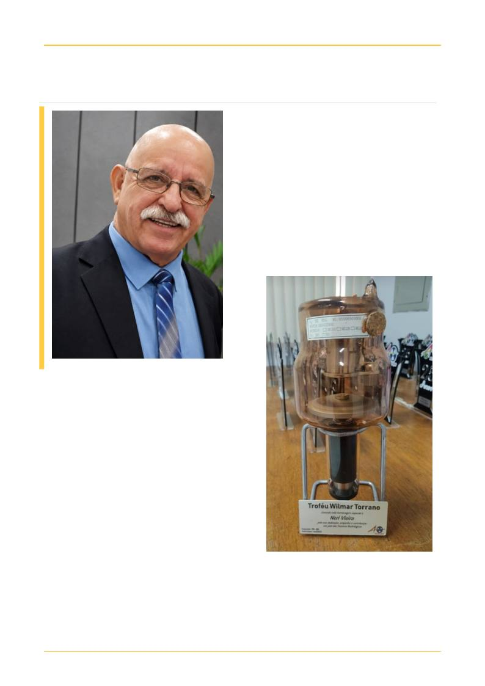

HOMENAGEM
35
ALÉM DA IMAGEM · CORED-SP · CRTR-SP
35
Para Wilmar, aprender é um processo permanente.
Aos estudantes, ensina a importância de amar a
profissão e compreender a responsabilidade por
trás de cada exame. Aos professores, reforça o
compromisso com a atualização e a formação de
novos profissionais. E aos que estão chegando, deixa
uma orientação que resume sua trajetória: antes de
olhar para a imagem, é preciso olhar para o
paciente.
Seu orgulho também está nos antigos alunos que
hoje seguem suas próprias trajetórias — entre eles,
seu filho, que escolheu trilhar o mesmo caminho.
Em reconhecimento aos profissionais de destaque
da área, a CORED-SP homenageia uma história
construída
com
conhecimento,
dedicação
e
compromisso. Um legado que atravessa gerações e
se resume em uma certeza: o conhecimento precisa
ser compartilhado, a profissão exercida com amor e
o paciente nunca pode deixar de ser o centro do
nosso trabalho.
Acervo do autor: 2026
Acervo do autor